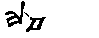
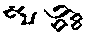
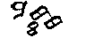
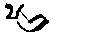
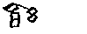
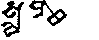
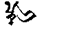
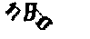
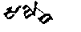
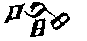

Acertijo original de S. A. Burlak. Adaptación al inglés de Mirjam Fried.
El tocario es una lengua antigua que se habló en la provincia china de Xinjiang entre los siglos VI y VIII d. C. Abajo hay algunas palabras escritas en la escritura del «tocario A». Como los alfabetos modernos, este sistema de escritura se basa en los sonidos (la fonética). Tu tarea será descubrir cómo representa los sonidos. Ten cuidado: es engañoso, pero perfectamente consistente. Junto a cada palabra encontrarás su transcripción fonética y su significado en español.
(Nota: el sonido que se escribe «ä» es una vocal especial del tocario A. Es muy distinta de la vocal que se escribe «a».)
| Palabra tocaria | Transcripción | Significado |
|---|---|---|
 | lap | «cabeza» |
 | spaltäk | «intención» |
 | maskäs | «vive» |
 | pal | «ley» |
 | tmäk | «por lo tanto» |
| (falta) | pkäl | «¡trae!» |
| (falta) | täm | «ese, eso» |
| (falta) | sasak | «solo, solitario» |
 | slamas | «fuegos» |
 | pkal | «debe hornearse» |
 | tamät | «él nació» |
 | (falta) | «saltando» |
| (falta) | säksäk | «sesenta» |
 | (falta) | «¡siéntate!» |
| (falta) | pat | «o (conjunción)» |
Tu tarea: completa los huecos de la tabla, ya sea la palabra tocaria o la transcripción. En el acertijo original había que dibujar los caracteres tocarios; aquí, en su lugar, elegirás la descripción correcta de cada palabra. Para eso les pondremos apodos a los signos según su forma: